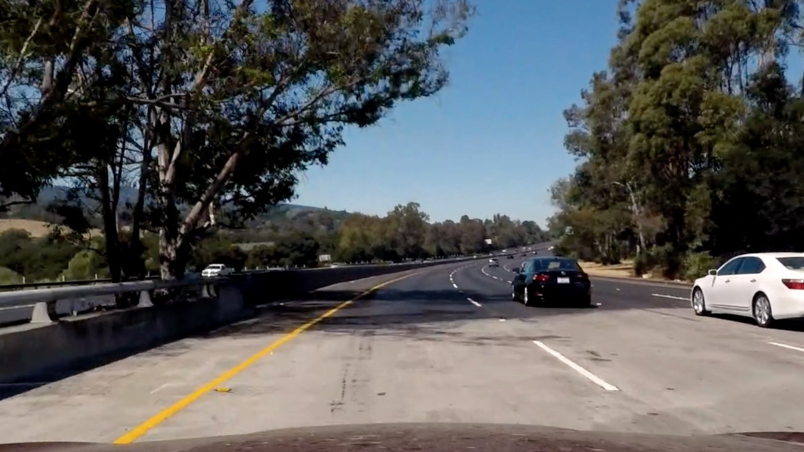

Advanced Lane Finding
A brief summary of the algorithm used for finding the current driving lane. This write-up explains the logic used and discusses some of the results.
Advanced Lane Finding Project
The goals / steps of this project are as following:
- Compute the camera calibration matrix and distortion coefficients given a set of chessboard images.
- Apply a distortion correction to raw images.
- Use color transforms, gradients, etc., to create a thresholded binary image.
- Apply a perspective transform to rectify binary image ("birds-eye view").
- Detect lane pixels and fit to find the lane boundary.
- Determine the curvature of the lane and vehicle position with respect to center.
- Warp the detected lane boundaries back onto the original image.
- Output visual display of the lane boundaries and numerical estimation of lane curvature and vehicle position.
Section I
Code Structure
The code consists of 5 major parts. Later sections elaborate upon these.
CameraCalibration class (CameraCalibration.py)
- Tries to read an already existing camera calibration.
- If not found, calibrates the camera with the provided images and saves the calibration.
BT module (*BinaryThreshold .py*)
- Set of functions and structures used for smart binary thresholding.
Lane class (Lane.py)
- Class to hold methods and data for lane detection/ tracking, fitting and smoothing.
- Each lane (left or right) is an object of Lane type. This improves code reuse and removes repetition.
Car class (Car.py)
- Master class that holds all Lane objects.
- Deals with initializing the objects, sanity checks between lanes and final drawing and annotation.
laneUtils (utilities.py)
- Set of common functions used by other modules or classes.
ALF.py
- All the above are then used by the main python file.
Section II
Camera Calibration
- The code for camera calibration is contained in the
CameraCalibration.pyfile. The calibration object first checks if an existing calibration can be read. We proceed with the calibration step if we don't find one. The calibration is then saved for use next time. - This is a classical monocular camera calibration setup using a checkerboard pattern. Given a known 3D object (in this case a plane with regularly spaced points), we aim to find the camera intrinsics and distortion coefficients that minimize the re-projection error between 2D images and the 2D projection of the object.
- The checkerboard is fixed in 3D at z=0, with equally spaced points in x and y plane. We name this set of points
obj. These points correspond to the board and remain the same for all images of the board. - At every successful detection (all points seen) of the chessboard in the test images, the detected
image_cornersand are appended to a growing listimage_pts. The set of pointsobjis also appended toobj_pts. - For calibration the
obj_ptsandimage_ptsare provided to thecv2.calibrateCamera()function, which returns an intrinsic matrixmtxand the distortion coefficientsdist. Thisdistis applied throughcv2.undistort()function to get the following results. - Here we show the effect of calibration and undistortion on a calibration image.
Pipeline (single images)
1. Distortion-corrected image.
- The image is undistorted using the camera intrinsics and undistortion coefficients calculated in the calibration step.
- This is done by
laneUtils.undistortcalled in_processfunction inALF.py. Here is a sample output. The third figure shows the effect of distortion on the first image.


2. ROI cropping.
- We are only interested in the lane part of the image. So to increase the processing speeds and reduce noise from the image, we crop out an image of shape
(930, 270, 3)starting at175, 450from the undistorted image. - All further processing is done on this reducec ROI image.
3. Binary Thresholding.
Binary thresholding is a very important step in the pipeline. Some challenges:
- We need to be able to differentiate the lane pixels in the image in varying light conditions.
- We should be robust to noise.
- If the threshold is too low, we will have too many pixels resulting in spurious detections.
- if the threshold is too high, we may not find enough pixels to get a fit.
Keeping the above in mind and after looking at a few sample images, smart adaptive thresholding algorithm is used. This helps in avoiding to select a particular value and makes it robust to changing road structure and lighting.
The code for this can be found in
binary_thresholdfunction onBinaryThreshold.py.A combination of the R channel from RGB and the V channel for HSV is used because they seemed most responsive to the white and yellow colors.
The best lane fits were achieved when the lane pixels accounted for 1-3.5% of the total image area (this was done by approximating the length of the lane in the image and calculating the maximum number of lane pixels possible).
Starting at a relatively lenient threshold
R_Init and V_initof 150 for both R and V, we allow the algorithm to vary both the thresholdsdThtill the lane pixel count reaches within 1-3.5%. This is like gradient, where the gradient- -1 , lane pixel count <
minarea(1%) - +1 , lane pixel count >
minarea(1%) and <minarea(3.5%)
- -1 , lane pixel count <
If a good value is not found in 10 steps, the values are probably overshooting, and we make the search finer by reducing
dTh.Once we find a good value for R and V we save it to
R_Best and V_Best. We keep using this value for future frames, till the area condition is not valid. Then we re-iterate and find a new value that works.If we are unable to find a value that works within our range
BT.ThresholdRangeor within a given number of stepsbailout_counter, we report a failure and do not proceed with lane detection.Here is a sample output of the various steps the algorithm takes. The GIF shows the thresholding over 11 steps. The final image is the one accepted for lane detection by the algorithm.
4. Perspective Transform:
We need to apply a perspective transform to get a bird's eye view of the lanes. The code to do this can be found in
laneUtils.get_warp_unwarp_matrices: returns warping matrix and its inverse. Called bymain().
laneUtils.warp_image(). Warps image by the given matrix. Called byget_lanes()inCarclass.The ROI is transformed into a
(640, 240)image. The points were selected by looking at a few images of straight lines and then hardcoded to the following source and destination points:
| Source | Destination |
|---|---|
| 402, 10 | 100, 0 |
| 203, 10 | 540, 0 |
| 930, 270 | 100, 240 |
| 15, 270 | 540, 240 |
Here is a sample image which shows the bird's eye view.

5. Identifying lane-line pixels and polynomial fitting
Majority of the
Laneclass is dedicated to detecting/ tracking lines and calculating fit.Two approaches are used for identifying lane pixels:
If no previous tracking information exists, the sliding window approach is used.
Lane.detect_lane()- Peaks are detected in each half of the image (One half for left lane and other for right).
- The image is then split into rows of height
sw_height. - Starting from bottom, pixels around the centroid within a radius
sw_widthare searched. If white lane pixels are found, they are appended to a list. - A new centroid is calculated for the next row, if enough pixels
num_whiteare found.
If we have a previous tracking information, we search for pixels around that line.
Lane.track_lane()- For every y location, we calculate the x location.
- In a window
search_widtharound the x location, we look for lane pixels. - If pixels are found, we append them to a list.
Line Fitting: code in
Lane.fit_line()- We fit a 2^nd^ degree curve on the given x and y pixel locations.
numpy.polyfit()was used to fit the curve.
Sample images are shown for both cases:
Lane Detection:
- The red boxes show the sliding window.
- The green lines show the centroid (also the sliding window anchor).
- The blue lines are the newly detected lines.
Lane Tracking:
- The green line shows the line used for tracking.
- The pink/ grey lines are the newly fit lines
6. Radius of curvature calculation and and the position of the vehicle calculation.
For RoC:
- This calculation is first done per lane in the Lane class. The code for these can be found in
Lane.calc_RoC(). Then the values are averaged for the 2 lines in the Car class. The code to do so is contained inCar.calc_RoC().
- This calculation is first done per lane in the Lane class. The code for these can be found in
For position of vehicle in center of lane:
- We first calculate the position of each lane with
Lane.calc_base_position()in pixels. - The center of the lane can be assumed to be the mid-point of the image width. We can then average the locations of the 2 lanes and calculate the position offset from the center.
- This value is then converted to meters in
Car.calc_dist_from_center().
- We first calculate the position of each lane with
To calculate the RoC and position of car in metric units, we need to find the meters/ pixels scale in x and y axis.
This value was found by looking at the sample images and consulting the US Highway requirements.
For the current case,
scale_X = 3.7/420 #(meters/pixels)scale_Y = 3.048/33 #(meters/pixels)
The minimum RoC and width of the lane are also considered to reject or keep the detected lanes. This is done in the function
Car.sanity_check().
7. Finished images with lane and annotation.
- This final step of the pipeline is done in
Car.draw_lanes(). - Each
Laneobject maintains a list of pixels (x, y) locations. We use these values in thecv2.fillPoly()function to fill a polygon to cover the expected lane area. - This image is then warped back by using the
Minvperspective transform matrix. This image is the same size as the ROI. It now needs to be transplanted into the original full resolution image. - We first mask out the area of the lane (the green colored part) to get
maskandmask_inv. We can get the foreground imageimg_fgand background imageimg_bgby usingcv2.bitwise_and(). - Then we add the 2 images to get a clean looking colored ROI imge with the lane drawn. We use
cv2.addWeighted()to overlay this image onto the colored ROI. - This ROI image with the lane drawn is then placed into the full size image frame for output.
- The annotations are then added onto the final image in
Car.annotate().
Pipeline (video)
1. Here's a link to the project video result. Another more challenging video can be found here.
- The lanes drawn are smooth and non-wobbly.
- The lanes keep tracking during frames with change in road material and over shadow patches.
Discussion
Salient points:
- A circular buffer of 1 second (25 fps) data is maintained to smooth data with an averaging filter.
- The adaptive binary thresholding with a flavor of gradient descent, tries to find thresholds for the best binary image. These values remain applicable for a large number of frames. This saves processing time while maintaining best values.
- The histogram based sliding window method is only initiated in the beginning or if tracking is lost for
Ntframes. In all other cases, we try to track off of the best (smooth) fit till now. This is helpful in rejecting noisy data and helps with stable lane detection. - Once lanes are detected, a sanity check is performed to ensure lanes are not too narrow or too wide.
- All values are provided as config dictionaries to allow integrating as part of a larger pipeline.
Failure points:
- Although the pipeline works well for the simple project video and the challenging video, it does not do well in the more challenging (harder_challenge) video.
- If the image is extremely bright (glares) or extremely dark (shadows) for extended periods of time, tracking is lost.
- The pipeline has been constructed for highway/ freeway like lane scenarios, where assumptions have beenmade about lane orientations and positions. We expect the lanes to be straight (kind of) or mildly curved. Tracking is lost if the lanes are snaking for long periods of time.
- If lanes with color different than yellow or white (not applicable for US) are encountered, lane detection will not work.
Future work:
- Would like to implement 3 degree curve fitting for the lanes. I already have that in place for curve fitting, but would like to implement numercial gradient calculation for finding RoC.
- Exploring more color spaces.
- Adding more thresholding operations. I explored edge gradients in x and y but R and V color channels seemed to give me enough information for the current task.
- Exploring a better filtering algorithm. The current averaging works fine but seems less responsive to changes in curves. Ideally we would want to reject noise while integrating good measurements.